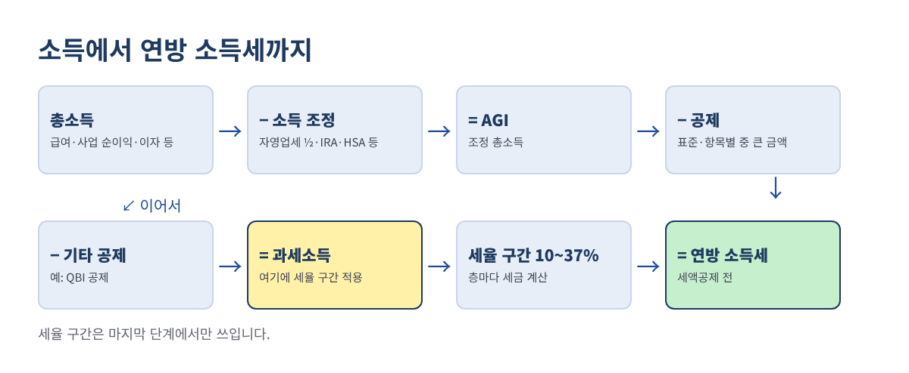
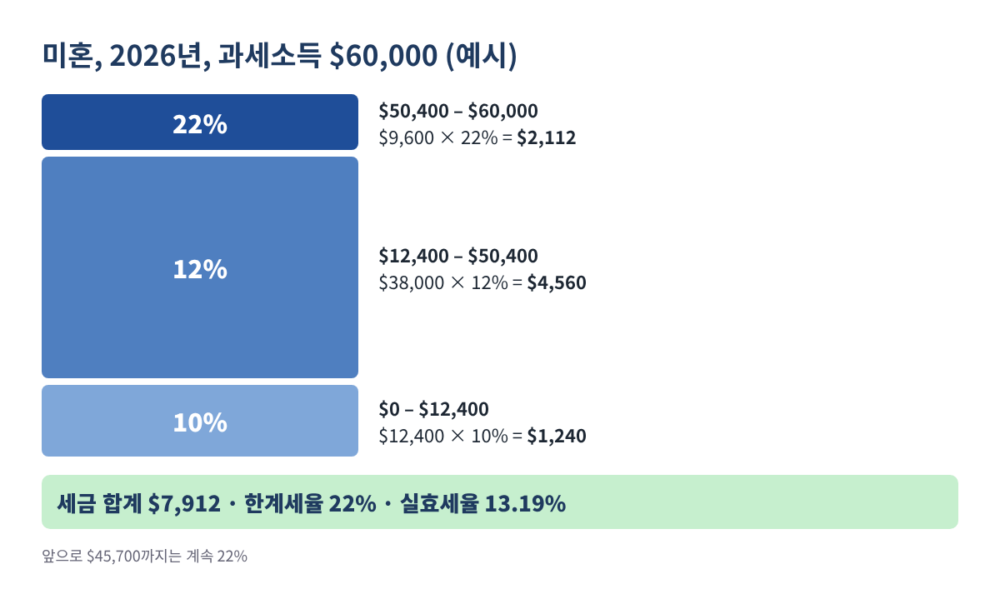
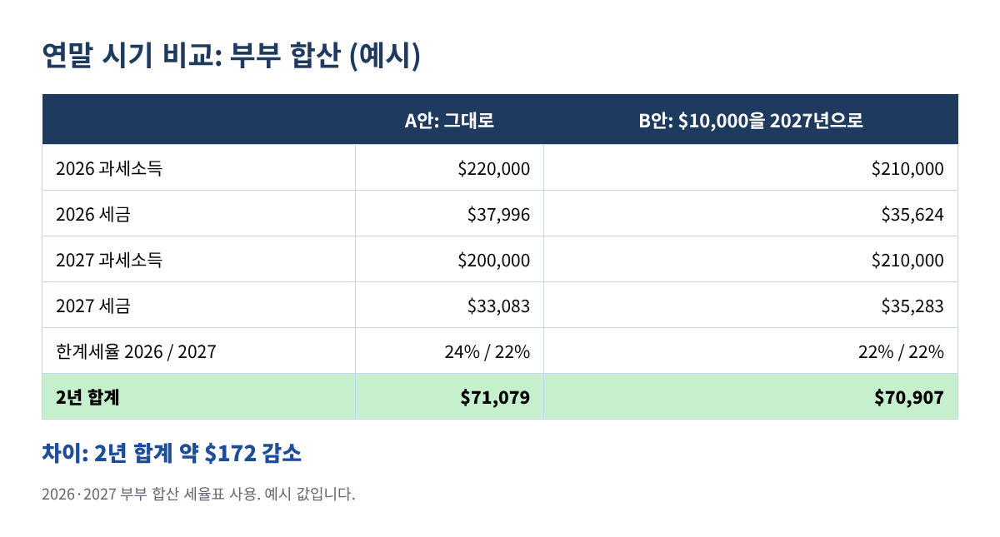

내 연방 소득세, 세율 구간별로 직접 계산하는 법 (2026·2027년): 한계세율과 실효세율 쉽게 구분하기
"우리는 22% 구간이라 보너스 받아도 세금으로 다 나가요." 연말이 되면 보너스, 급여 인상, 인보이스 날짜, 은퇴계좌 납입을 정하면서 사장님들이 자주 하시는 말씀입니다. 그런데 이 말에는 서로 다른 두 숫자가 섞여 있습니다. 다음 1달러에 붙는 한계세율과 실제로 평균 몇 %를 내는지 보여 주는 실효세율입니다. 두 숫자를 직접 계산할 줄 알면 연말 결정이 훨씬 쉬워집니다. 이 글에서는 2026·2027년 IRS 세율표로 계산 순서, 예시, 엑셀·구글 시트에 그대로 넣을 수 있는 수식을 정리했습니다.
이 글은 교육용 일반 정보이며 세무·법률 자문이 아닙니다.
1단계: 총급여가 아니라 과세소득에서 시작합니다
세율 구간은 과세소득에 적용됩니다. 과세소득 = 총소득 − 소득 조정(자영업세의 절반, 공제 가능한 IRA·HSA 납입 등) − 표준공제와 항목별 공제 중 큰 금액 − 기타 공제(사업소득 공제 QBI 등)입니다.

2026년 표준공제는 미혼·부부 개별 $16,100, 부부 합산 $32,200, 세대주 $24,150입니다. 2027년은 IRS 발표 기준 $16,600, $33,200, $24,925입니다. 65세 이상이거나 시각장애가 있으면 추가 표준공제가 있습니다(2026년: 미혼 $2,050, 부부는 1인당 $1,650).
2단계: 맞는 세율표를 고릅니다
각 세율은 과세소득의 어느 '경계선'에서 시작합니다. 경계선을 넘은 금액은 다음 경계선까지 그 세율로 과세됩니다. IRS 공식 숫자는 아래와 같습니다.
2026년 세율 구간 (IRS Rev. Proc. 2025-32)
| 신고 유형 | 10% | 12% | 22% | 24% | 32% | 35% | 37% |
|---|---|---|---|---|---|---|---|
| 미혼(Single) | $0 | $12,400 | $50,400 | $105,700 | $201,775 | $256,225 | $640,600 |
| 부부 합산(MFJ) | $0 | $24,800 | $100,800 | $211,400 | $403,550 | $512,450 | $768,700 |
| 부부 개별(MFS) | $0 | $12,400 | $50,400 | $105,700 | $201,775 | $256,225 | $384,350 |
| 세대주(HOH) | $0 | $17,700 | $67,450 | $105,700 | $201,750 | $256,200 | $640,600 |
2027년 세율 구간 (IRS 보도자료, 2026년 11월)
| 신고 유형 | 10% | 12% | 22% | 24% | 32% | 35% | 37% |
|---|---|---|---|---|---|---|---|
| 미혼(Single) | $0 | $12,800 | $52,025 | $109,125 | $208,325 | $264,550 | $661,375 |
| 부부 합산(MFJ) | $0 | $25,600 | $104,050 | $218,250 | $416,650 | $529,100 | $793,650 |
2027년 부부 개별 신고는 부부 합산 금액의 절반입니다(2026년과 같은 규칙). 12%는 $12,800, 37%는 $396,825부터입니다. 2027년 세대주 구간은 IRS 보도자료에 나오지 않았으니, 세대주로 2027년을 계획하실 때는 Rev. Proc. 2026-35에서 확인하세요.
3단계: 층마다 세금을 계산해 더합니다
과세소득을 층층이 쌓인 블록이라고 생각하시면 됩니다. 맨 아래 층은 10%, 그다음 층은 12% 식입니다. 경계선을 넘어도 그 아래 금액의 세금은 바뀌지 않습니다.

예시 A (예시 값): 미혼, 2026년, 과세소득 $60,000
- 처음 $12,400 × 10% = $1,240
- $12,400~$50,400 구간 $38,000 × 12% = $4,560
- $50,400~$60,000 구간 $9,600 × 22% = $2,112
- 연방 소득세 합계 = $7,912
빠른 방법: 내 구간 시작점의 '기본 세액'($50,400에서 $5,800)에 경계선 초과 금액 × 세율을 더합니다. $5,800 + 22% × $9,600 = $7,912.
한계세율 = 22% (다음 1달러에 붙는 세율)
실효세율 = $7,912 ÷ $60,000 = 13.19%
22% 구간에 남은 금액 = $105,700 − $60,000 = $45,700
4단계: 엑셀·구글 시트로 계산하기
B2:H2에 해당 연도·신고 유형의 경계선 7개를 넣습니다(2026년 미혼: 0, 12400, 50400, 105700, 201775, 256225, 640600). B3:H3에는 바로 아래 세율보다 늘어난 만큼을 넣습니다: 10%, 2%, 10%, 2%, 8%, 3%, 2%. A1에 과세소득을 넣고 아래 수식을 씁니다.
세금: =SUMPRODUCT((A1>B2:H2)*(A1-B2:H2)*B3:H3) 한계세율: =INDEX({0.10,0.12,0.22,0.24,0.32,0.35,0.37},MATCH(A1,B2:H2,1)) 실효세율: =IF(A1>0,세금칸/A1,0)
첫 수식은 경계선을 넘은 금액마다 늘어난 세율만큼 더하는 원리입니다. 예시 A의 $60,000을 넣으면 $7,912가 나옵니다.
5단계: 인상·보너스·공제 효과 확인하기
변화의 실제 효과는 '변화 전 세금'과 '변화 후 세금'을 각각 계산해 빼면 됩니다. 아래는 모두 예시 값입니다.
| 예시 | 과세소득 | 세금 | 한계 | 실효 | 변화 | 세금 효과 |
|---|---|---|---|---|---|---|
| A. 미혼 2026, 급여 $5,000 인상 | $60,000 | $7,912 | 22% | 13.19% | +$5,000 | +$1,100 |
| B. 부부 합산 2026, 공제 $10,000 추가 | $220,000 | $37,996 | 24% | 17.27% | −$10,000 | −$2,372 |
| C. 세대주 2026, 보너스 $3,000 | $85,000 | $11,601 | 22% | 13.65% | +$3,000 | +$660 |
예시 A: 인상분은 22%로 과세되어 새로 번 1달러 중 78센트가 남습니다(급여세·주세 전). 예시 B: 공제가 두 구간에 걸칩니다. $8,600은 24% 층에서($2,064), $1,400은 22% 층에서($308) 빠지므로 절감액은 $2,372로, 24% × $10,000보다 작습니다. 예시 C: 보너스 전체가 22% 층에 있어 연방 소득세가 $660 늘어납니다.
6단계: 12월 31일 전에 2026년과 2027년을 비교합니다
내년 과세소득이 줄어들 것 같다면, 소득을 2027년으로 미루거나 공제를 2026년으로 당기면 2년 합계 세금이 줄 수 있습니다. '옮기지 않을 때'와 '옮길 때' 두 해 세금을 각각 계산해 비교하세요.

이 예시에서는 약 $172가 줄어듭니다. 옮긴 금액 중 $8,600이 2026년의 24% 층에서 빠져 2027년 22% 층으로 들어가기 때문입니다. 두 해가 같은 구간이라면 옮겨도 거의 차이가 없습니다. 현금주의 사업자는 보통 돈을 받았거나 받을 수 있게 된 때 소득이 되므로, 12월에 이미 받은 수표는 12월 소득입니다.
자주 하는 실수
- 전체 소득에 최고 구간 세율을 곱하기.
- 과세소득 대신 총급여로 계산하기.
- 구간 때문에 인상을 받으면 실수령이 줄어든다고 생각하기. 경계선을 넘은 금액에만 높은 세율이 붙습니다.
- 아래 구간에 걸치는 공제를 최고 세율로만 계산하기.
- 작년 세율표 쓰기. 경계선은 매년 물가에 맞춰 바뀝니다(같은 미혼 $60,000이 2027년 표로는 $7,741.50).
- 장기 양도차익·적격 배당을 함께 계산하기. 이들은 0%, 15%, 20% 세율을 씁니다.
자주 묻는 질문
높은 구간으로 올라가면 소득 전체에 높은 세율이 붙나요?
아닙니다. 경계선을 넘은 금액에만 높은 세율이 적용됩니다.
공제 효과는 어떤 세율로 어림하나요?
먼저 한계세율로 계산하고, 공제 때문에 아래 구간으로 내려가는지 확인하세요. 내려간다면 예시 B처럼 일부는 낮은 세율만큼만 효과가 있습니다.
실효세율이 월급에서 떼는 원천징수 비율과 같나요?
꼭 그렇지는 않습니다. 원천징수는 추정치이고, 이 계산은 연방 소득세만 다루며 사회보장세·메디케어세·주세는 포함하지 않습니다.
자영업세도 포함되나요?
아닙니다. 자영업세는 별도로 계산합니다. 그 절반은 1단계에서 소득 조정으로 빠져 과세소득을 줄입니다.
간단 체크리스트
- ☐ 과세소득 계산 (처음에는 작년 신고서 숫자를 참고)
- ☐ 연도와 신고 유형 확인
- ☐ 층별로 세금 계산 후 기본 세액 방식으로 확인
- ☐ 한계세율·실효세율 기록
- ☐ 인상·보너스·공제 전후 비교
- ☐ 12월 31일 전에 2026년 vs 2027년 비교
이 글은 교육용 정보이며 세무·법률 자문이 아닙니다. 연방 일반 소득세만 다루며 주세, 자영업세, 양도소득 세율, 대체 최저세(AMT), 순투자소득세(NIIT), 세액공제는 포함하지 않습니다. 실행 전에 irs.gov 또는 세무 전문가를 통해 최신 규정을 확인하세요.
위 과정을 그대로 해 주는 연방 소득세 구간 계산기 2026-2027은 아래 무료 키트 다운로드에서 가입 없이 무료로 받으실 수 있습니다(엑셀 + PDF 가이드).
출처
- IRS Rev. Proc. 2025-32 (2026 inflation adjustments)
- IRS news release IR-2026-133: tax year 2027 inflation adjustments
- IRS Rev. Proc. 2026-35 (2027 inflation adjustments)
무료 키트 다운로드
글에서 설명한 내용을 그대로 따라 할 수 있는 도구입니다. 가입 없이 바로 받으세요.
- Excel 계산 도구 (.xlsx)Tax_Bracket_Calculator_2026_2027_EN_KR.xlsx · 28 KB
- 단계별 가이드 (PDF)Tax_Bracket_Guide_2026_2027_EN_KR.pdf · 409 KB
본인과 본인 사업에 무료로 쓰세요. 재판매·재배포는 하지 마세요. 일반 정보이며 세무·법률·회계 자문이 아닙니다. 숫자는 본인 자료로 꼭 확인하세요.